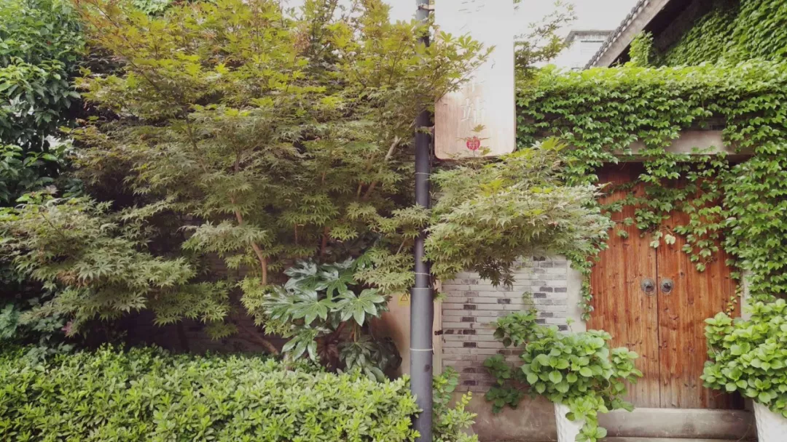
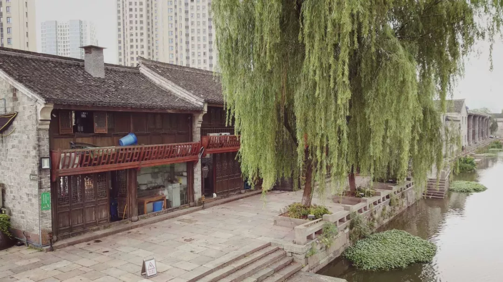
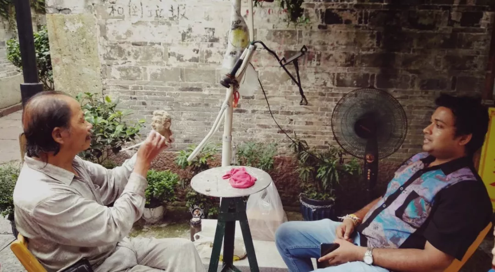
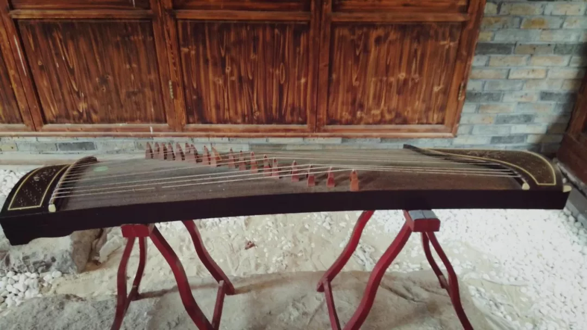

> 南塘老街
一条南塘河，贯穿城南北
柳枝似乎是无力的,别有一番柔弱的美感,在这个蓄满层云的午后,丝丝缕缕的阳光,落在狭长的街道上.风隐存着夏的倦意从身旁掠过，裹挟着四周店铺的气味
好闻、惊异、新奇
异国香水、调味汤汁
六月啊,真是个奇妙的季节,人们心怀感激.走在路上，笑语盈盈.没有人会去互相询问,这种快乐的由来.只是默契的认同着。这，就是生活吧！
南塘老街二期外围靠近停车场的地方。从外面的经过，无论是坐公交、抑或步行，都可以看到这条街道，灰色的瓦和仿古的建筑也分外引人注目。
几年前，约摸是我读中学时，来过这儿，当时这些都还在修建，记忆里，似乎只有桥和几处房子已初具雏形，其他并没什么吸引人的地方，游人也寥寥无几，也多是本地的居民，只是停车场出奇的开阔，步行走了四百多米才绕开，这个距离应该还要算上还在施工的建筑工地。

而今再次踏足，此地早已扩建、修缮一新，二期工程也已完工，所有的屋子都有商家进驻，原本的旧宅院实际只有几栋，分别是余氏宗祠、袁牧之故居、同茂记、南门袁氏故居建筑群。这些历经岁月洗礼的房屋置于一排崭新的建筑之间，如不留意景区指示牌的话，其实不易察觉。
从桥看朝老街看去，沿河一片的低矮建筑，外侧桥上的售卖铁丝手工艺品的师傅。沿街步行，两侧多为吃食，首当其冲的是包子铺，皮薄汤汁多，一个大包子，看上去似乎像是一个面皮裹着的肉汤，食客很多，叫卖的是一个小青年，可能是店家的孩子，在给家里帮忙，看上去一脸稚气，却没有任何怯场的样子。
路过一个鹦鹉，被关在大笼子里，放置在海鲜面店左侧，乍一看以为是真的，但一动也不动，稍微留意一下就知道是假的，但确实比较好看，我个人反而更喜欢让这样的、没有生命的东西作为景观来进行展示。真鸟虽一时成本不如假鸟，但养护需细心，成本是累积的。况且，作为笼中之鸟，应该也很不是滋味吧。
旁边的空位上，有几个做成推车或窗口模样的小间，这就是手工艺者的摊位了。一位师傅正在为一位顾客塑像，顾客看上去像是印度之类的游客或留学生。总之鼻梁很有特点，师傅一点点的把泥团堆砌，捏改，形成一个轮廓，之后不断精进修饰，越来越像本人。我只驻足了片刻，拍完照之后就走了，回转到这里的时候，塑像已经基本完成了。估计用时也在2小时左右吧，要价约200，成品照片里多是老外，中国的顾客大约一估算价格，就走去购吃食了，不过，说不定也可能是塑像的师傅觉得展示外国人更能显示出自己的水平。

一个巷道，古意的气息迎面袭来，包裹在穿堂的风中。
那些木制的板是夜晚用来锁门的，在这里，每天夜里11点通道会被封闭，大约是考虑到二期外侧的酒店住宿人员。再往前，在临河的一侧，甬水桥横跨两岸。桥是有年纪的，漫生的青草可以作为见证，经过修缮后，部分老砖石仍得以留存在上面，而桥依旧行使着他的功能，连通小区和老街。
仿民国式样的黄包车，来去的行人初见总要坐一坐，拍照留存。
努力显得融恰的房子，也算是尽力了，如果和周围精心布局的园林精华一起欣赏，到也古色古香。关注年代其实并没有太多的意义，关注传承与发扬才是重点，希望这些建筑在商用的前提下，能够保证对古建筑建造的原汁原味。但目前的手工木匠人已不多了，谁去传承？得不到尊重的职业和艺术工作，在浮躁的时代里，是很难持续的。生活和理想之间，牢牢夹着一块沾了盐的面包。，靠着街道外侧的正在装修的店铺。
木槿花开，在外侧临街的无人之地，没有人驻足欣赏，或很少有人停下脚步。但花儿依旧艳丽，不为取悦人类，只为奉献自己的热情。木槿，又叫木棉、荆条、朝开暮落花、朝菌。想来，大约是“好景不等人，轻灵独自开”的意思吧。

南塘邮局，虽写着欢迎拍照，但位于内侧站立的收银阿姨却似乎不善逢迎，只是沉默的审视着人们拿起明信片，又漫不经心的放下。来往之人稍一查看，便出门而去，十几平米的空间，布局倒也可人，也想过要寻觅些手绘的明信片，但看上去都是些印刷品，想来，非印刷物的手工，价格一定也很优秀。
一期、而期之间的位置，靠外侧街道有个建筑，进门之后才发现是个会场，红木品鉴之类的主题。一楼内侧是一个开阔的像会议室一样的所在，二楼是展厅。进门正对面有一个仿制的宁波古地图，附近还有几幅挂在墙上的象山鱼拓。鱼拓栩栩如生，会场高朋满座。
路过一家名叫“已而”的茶室，其实，正确的读取顺序应当是“而已”。门内侧的仕女图和桌台都很精美，只是可怜了对面的古筝，落了满满的灰，无人弹奏和乐器是可悲的，人们仅仅观赏外在的轮廓，而不去活用这琴，失去音乐的乐器，就如同失去了嗓音的歌手，只留下能够被岁月轻易打磨的皮囊。
宁波南塘老街由宁波城旅投资发展有限公司开发建设，位于浙江省宁波古城南门外，曾经是旧宁波商贸文化聚集地的“南门三市”，位列宁波八大历史街区之一，同时也是宁波市“紫线规划”保护区域。呈南北走向，以祖关山路为界，分为南、北两街。街区保留了300多米的传统街巷，拥有文保单位1处，文保点6个。
宋代著名学者袁燮的后裔世居于此，区域内现存的袁氏家族居宅建筑群规模最大，类型包括居住院落、祠堂、学校等，其他还包括甬水桥、永善亭和关圣殿等文保建筑。北街以传统文化为基调，以商业为内容，以城市旅游为发展方向。南街主打“城市休闲”概念，突显休闲生活。
2012年1月15日，南塘老街一期盛大开街，穿越百年，老街新生。一期街区开街后，共计有20多家店铺率先营业，一期规划以餐饮美食为主，同时复兴传承了部分宁波老字号商家，引入宁波一副、赵大有、汲浭斋、草湖食品等传统餐饮品牌和一批极富地方特色的美食小吃，如宁海五丰堂、余姚黄鱼面、慈城四季香年糕等共30余家商铺。
2015年9月26日，南塘老街二期历经三年的规划和建设后正式开街。南塘老街二期占地约5万方，总长约900米，体量为一期的3倍。建筑主要以明清的江南民居风格为主，零星穿插民国风格建筑，建有戏台、八角亭、风雨长廊等传统建筑小品。

如果你来到东钱湖,我会带你走一走亭溪岭古道,从吴越穿越回来的时光。历经百年沧桑的古道展现着，过去的繁华与现在的宁谧。如果你来到东钱湖。我会带你去岳鄂王庙，始建于南宋端平年间的庙。距今已有750多年历史景区还开辟了湖摈烧烤基地，湖光山色间的烧烤野趣非常
如果你来到东钱湖，我会带你游览南宋石刻公园，肃穆的石刻记录着难以风蚀的历史记忆，看过了东钱湖石刻群，你会感受到东钱湖的文化魅力。
如果你来到东钱湖，我会带你露营湖边。于万籁无声之际听湖水起伏，感受东钱湖的气象万千，拥有涤荡凡尘之后的纯净心灵，关于东钱湖的故事还有很多。“尽说西湖足胜游，谁信东湖更清幽”这里有湖光山色，有人文底蕴沉淀，还有你想要的岁月静好，诗意的田园生活。清波浩淼，倒映碧空如镜；诗意栖居，原来钱湖胜景。东钱湖是宁波山水相依的城市会客厅，是一抹岁月沧桑过去的历史烟尘，喧嚣于这里沉淀，生活在这里铺展。
有着浙江省最大的天然淡水湖泊——东钱湖和华东地区最大的成片茶园——福泉山，这里温暖湿润、雨量充沛，冬无严寒、夏无酷热。而东钱湖镇的居民，就倚靠着这一片宁静淡泊的湖光山色，过着诗意朴实的栖居生活。